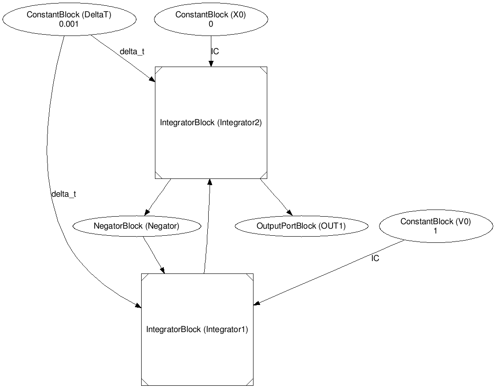
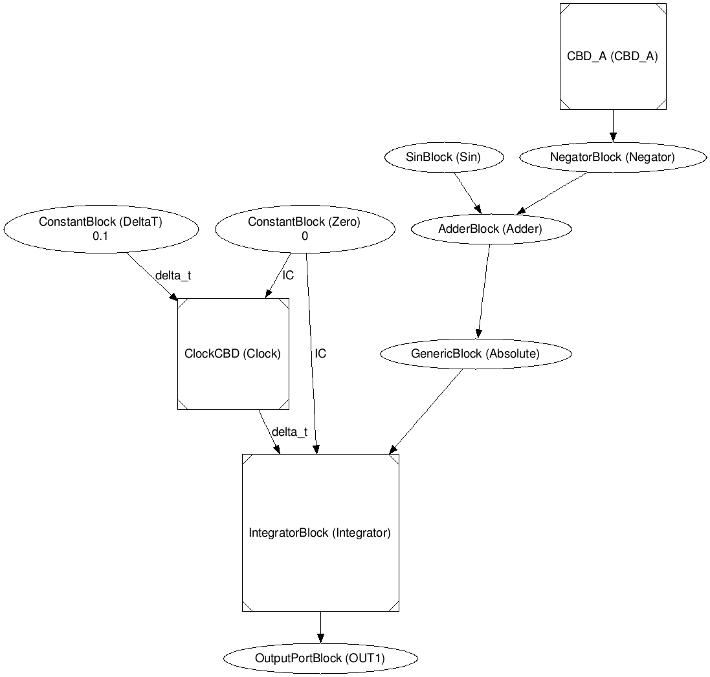
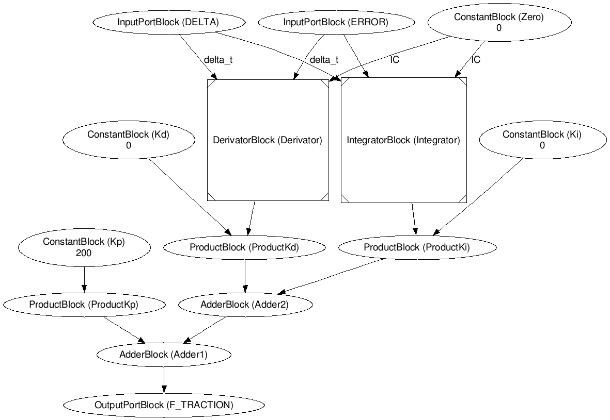

Assignment 3: Continuous Time CBDs
- Rafael De Smet - 20131145
- Benoît-Philippe Fornoville - 20133299
This report shows the results of assignment 3.
Task 1: Harmonic Oscillator
The goal of this task was to implement an harmonic oscillator using integral and derivative blocks. This will lead to an approximation of a sin(t) function. When build and simulated, the error of the oscillator was measured against the sin(t) function.
Integrator And Derivative Blocks
The first step of this task was to create the integrator and derivative blocks in the CBD class. These implementations can be found in CBD.py.
Using Integral Blocks - CBD A
Now we have the integral and derivative blocks, we can start building the oscillator. The oscillator is defined using the following second order differential equation:
d²x
/
dt²
= -x
where x(0) = 0 and
dx
/
dt
(0) = 1.
What we have to do is to translate this differential equation to a CBD model. The way we solve such a differential equation is by using integrals. In this case we are dealing with a second order differential equation, so we must use two integrals, two IntegralBlocks in a CBD. The output of the first integral will serve as the input of the second. This represents the difference between the orders of the equation. The conditions given by the equations serve as the IC of the integral. The first integral will have an IC of 1 since
dx
/
dt
(0) = 1.
The second integral will have an IC of 0 since x(0) = 0. Of course both IntegralBlocks will have a Δt input as well.
The right hand side of the equation tells us what input the first integral should have. The output of the second integral is x. This means that we need to negate the output of the second integral and use this as input for the first integral. The CBD model of this can be found below.

When we simulate this CBD over time and plot the value of x, we get the results in PlotCBDA.html. Note that in this plot Δt is equal to 0.001. This leads to very satisfactory results.
Using Derivative Blocks - CBD B
TODO
Measuring Error In CBD A
The next part of this task is to measure the error of the harmonic oscillator in CBD A against the sin(t) function. We know the function to measure the error, it is as follows: e(t) = integral of |sin(t) - x(t)|. x(t) is here the current value of the oscillator (CBD A). This means we take the integral of the magnitude of the difference between the ideal value and the approximated value. Note that in this case it is important to choose the right stepsize (Δt). When we use stepsize 0.1 we get the result in PlotErrorA1.html, compared to the result when stepsize is 0.001 in PlotErrorA2.html. It is clear that the smaller stepsize leads to a smaller error. At time 1000, a stepsize of 0.1 leads to an error of 40000 and a stepsize of 0.001 leads to an error of 400. The CBD used to measure the error is shown below. This picture is the setting with a stepsize of 0.1. The SinBlock uses the current time to calculate its output value.

Measuring Error In CBD B
Analogously to CBD A, we measure the error of CBD B against the sin(t) function. The same two stepsizes were used. The result of using stepsize 0.1 can be found in PlotErrorB1.html and the result of using stepsize 0.001 can be found in PlotErrorB2.html. Again, below is the CBD used to measure the error, it is the same as in the previous part, except we know use CBD B instead of CBD A.
TODO
Results Task 1
TODO
We can conclude that using a smaller stepsize leads to a smaller error. Besides that, it is clear that using a integral based implementation is better than a derivative based one.
Task 2: Driver-less Train
The second task was the build a simulation of a cruise control of a train. This system exists of several smaller CBDs. These will be discussed below. The next picture is a full overview of the system.

Look-up Block
The first part of this task was to build a block that tell the train which speed to take at which time. The implementation of this block can be found in controller.py in the class ComputerBlock.
Build And Simulate
The second and largest task is to build and simulate all the parts of a Driver-less Train. As shown in the assignment, this consists of 5 main elements.
- Time
- Look-up Block
- PID Controller
- Plant
- Cost Function
Time CBD And Look-up Block
The Time CBD and Look-up Block have been discussed previously and in the previous assignment. Below is the full TimeCBD.

PID Controller
TODO

Plant
TODO

Cost Function
TODO
Tune
TODO